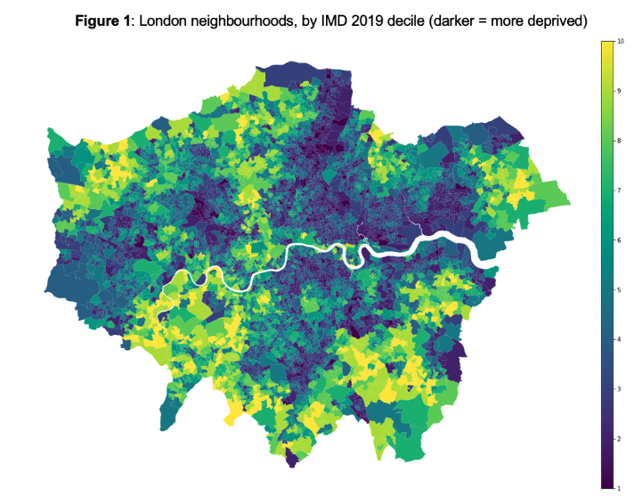

Matt Chapman
Data Scientist @ Sky
5+ years of commercial experience in analytics, strategy and writing. Previously at Vodafone, VIMA Group (management consulting), Ovo Energy, HSBC.
University of Oxford
MSc Social Data Science, Distinction
University of Cambridge
BA (Hons) Geography, Double First Class
Site designed + built by Matt
Current projects
AI in Five
Weekly newsletter covering the latest stories in AI and tech. 1k+ subscribers.
theSQLgym
Free online platform for learning SQL. I coded the platform from scratch in Django (Python).
D3.js
Scrollytelling with D3.js and Scrollama.js
The first wave of COVID-19 infections led to widespread stories of shortages in grocery stores as consumers stocked up in anticipation of lockdowns, a behaviour colloquially known as ‘panic buying’. In this project, I used mobility data from Google and Apple to empirically investigate the extent of panic buying in different countries.
Writing
A Bunch of 5-Year-Olds Beat CEOs and MBAs in this Challenge
What those kindergarteners can teach us about project management, and the unexpected impact of a $10,000 incentive
Is Decision Science Quietly Becoming the New Data Science?
Many of the world’s top companies have started hiring Decision Scientists. Is this the quiet beginning of a new era?
ChatGPT and Bard Are Not Truly Creative (Yet)
AI is great at answering questions it is asked, not posing questions never before voiced
You can find more writing samples here
Data Science projects
Deep Learning and NLP for hate speech detection
Hate speech detection is the automated task of determining whether a piece of text contains hateful content. In this project, I built a classifier using PyTorch and natural lanaugage processing (NLP) to fine-tune a BERT model.
Web scraping with Python and MongoDB
The web hosts vast quantities of data useful for research. In this project, I built a custom data collection pipeline using the Python library scrapy and a MongoDB cluster.
Geospatial analysis of deprivation in London
In this project, I use Geopandas to visualise data on deprivation levels in London and analyse changes over time.
Using multi-level modelling in R to investigate the drivers of Covid-19 vaccine hesitancy
In many tasks, failing to account for the hierarchical relations and autocorrelations between data can create “ecological fallacies” which misguide our interpretation of the data. In this project, I use mutli-level regression modelling to account for spatial autocorrelation and study reasons for Covid-19 vaccine hesitancy.